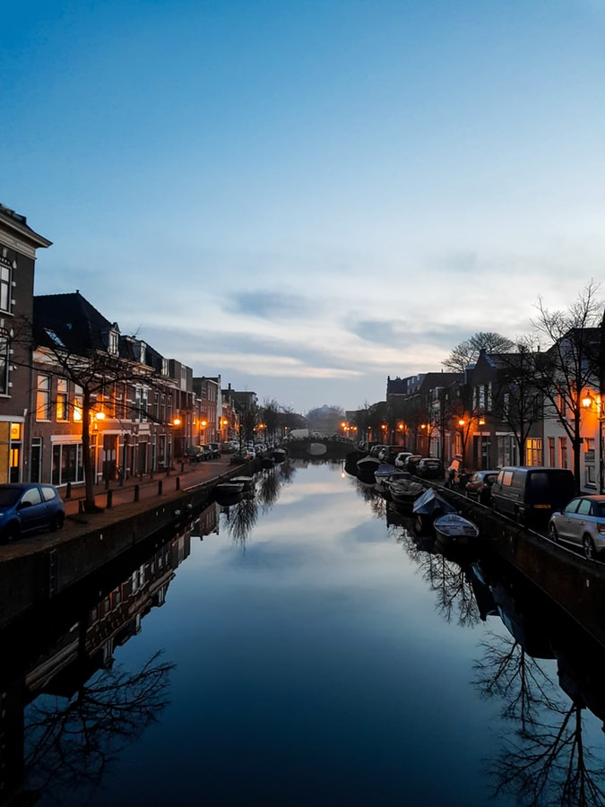
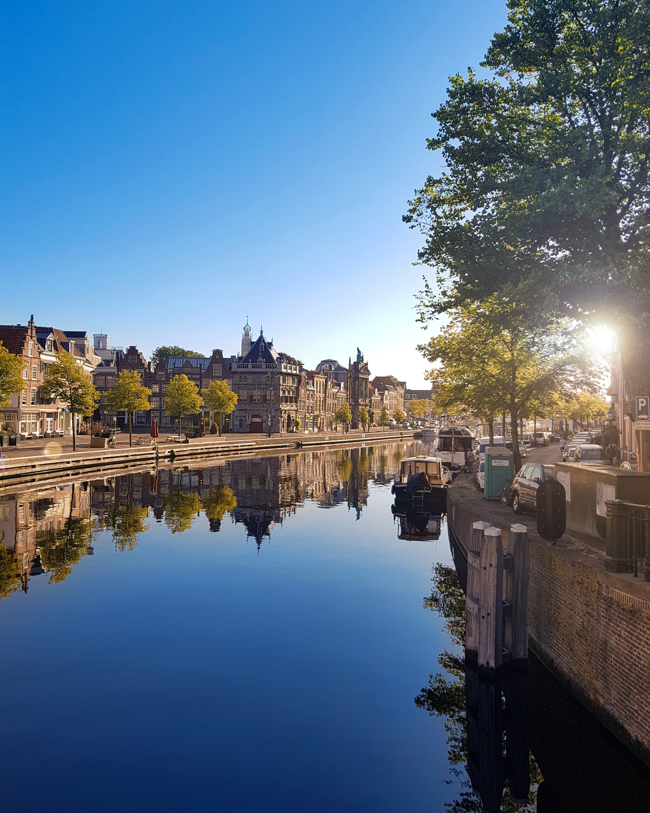
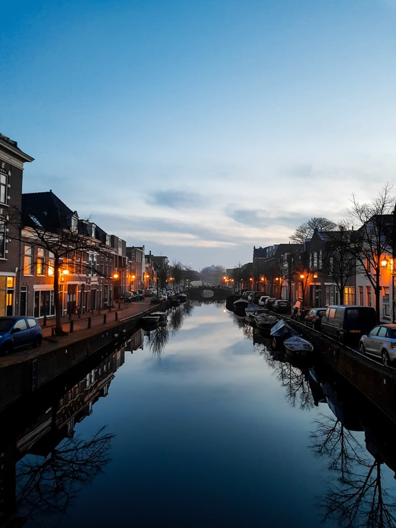
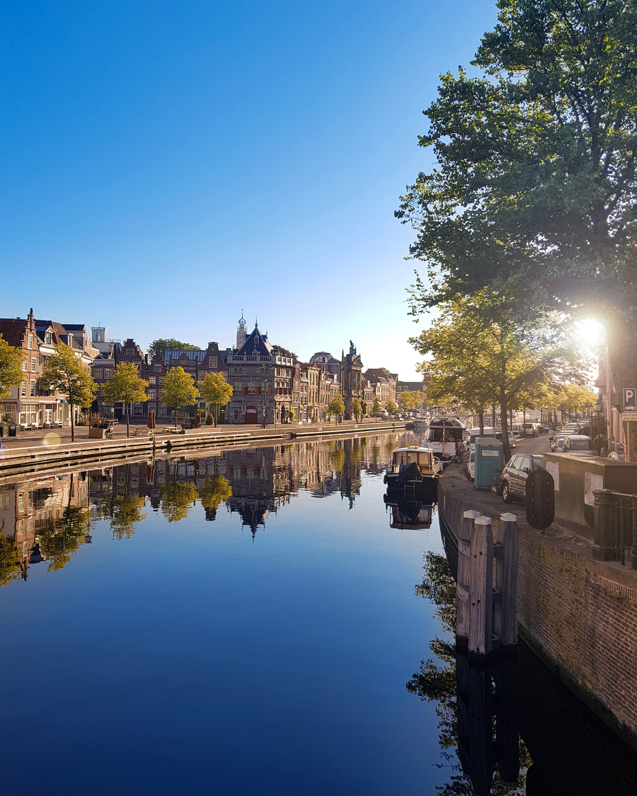

Over Haarlem
Haarlem staat bekend om zijn mooie gebouwen en aardige gebouwen zoals op deze foto:
 Haarlem staat bekend om zijn mooie gebouwen en aardige gebouwen zoals op deze foto:
 Dit gaat over oude stad Haarlem

Haarlem is een stad en gemeente in Nederland en de hoofdstad van de provincie Noord-Holland. De stad ligt aan de rivier het Spaarne en in de regio Zuid-Kennemerland. Haarlem behoort tot de middelgrote steden in de Randstad. Tot de gemeente Haarlem behoren de stad Haarlem en het westelijke deel van het dorp Spaarndam. Haarlem telt 161.265 inwoners[1] en is daarmee na Amsterdam de grootste stad van Noord-Holland en de twaalfde gemeente van Nederland. De grootstedelijke agglomeratie Haarlem (Haarlem, Heemstede, Bloemendaal en Zandvoort) telt ongeveer 230.000 inwoners, [1] en het stadsgewest Haarlem (Zuid-Kennemerland en IJmond) ruim 430.000 inwoners.[1] Haarlem wordt voor het eerst genoemd in een document uit de 10e eeuw. In 1245 kreeg het stadsrechten van Willem II van Holland. Aan het eind van de middeleeuwen was Haarlem een van de belangrijkste steden van Holland geworden. In de Vroegmoderne Tijd ontwikkelde de stad zich op industrieel gebied als textielstad en op cultureel gebied als schildersstad.
Haarlem is een stad en gemeente in Nederland en de hoofdstad van de provincie Noord-Holland. De stad ligt aan de rivier het Spaarne en in de regio Zuid-Kennemerland. Haarlem behoort tot de middelgrote steden in de Randstad. Tot de gemeente Haarlem behoren de stad Haarlem en het westelijke deel van het dorp Spaarndam. Haarlem telt 161.265 inwoners[1] en is daarmee na Amsterdam de grootste stad van Noord-Holland en de twaalfde gemeente van Nederland. De grootstedelijke agglomeratie Haarlem (Haarlem, Heemstede, Bloemendaal en Zandvoort) telt ongeveer 230.000 inwoners, [1] en het stadsgewest Haarlem (Zuid-Kennemerland en IJmond) ruim 430.000 inwoners.[1] Haarlem wordt voor het eerst genoemd in een document uit de 10e eeuw. In 1245 kreeg het stadsrechten van Willem II van Holland. Aan het eind van de middeleeuwen was Haarlem een van de belangrijkste steden van Holland geworden. In de Vroegmoderne Tijd ontwikkelde de stad zich op industrieel gebied als textielstad en op cultureel gebied als schildersstad.